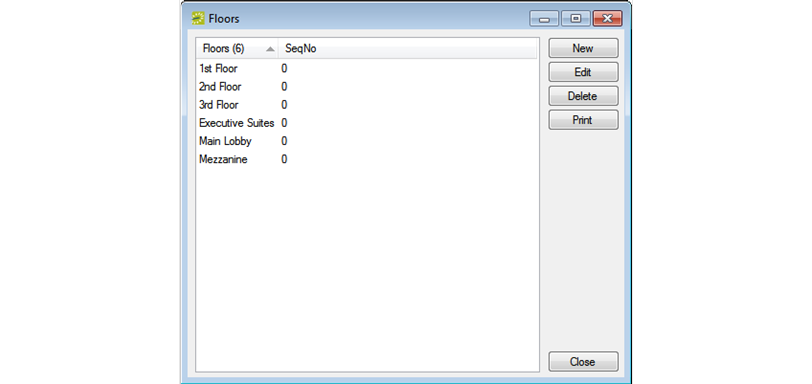
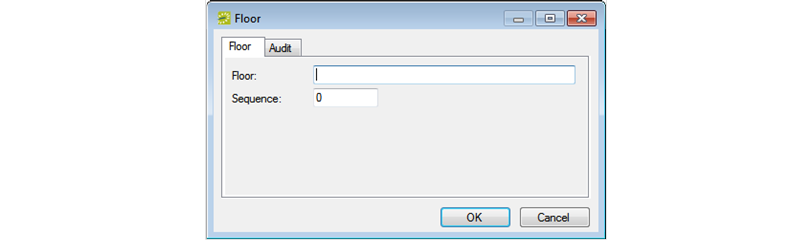

A is optional information when you are defining a room and when you are searching for a room. A room can be assigned to only a single floor. Example of floors include First Floor, Basement, and Garden Level. When you configure a floor, you must provide a floor name and a sequence.
Floors Configuration Page


Optionally, in the field, enter a sequence for the new floor. The sequence determines the order in which the floors are displayed in the Floor dropdown list. The lower the sequence number, the higher in the list that the floor is displayed. If the sequence is set to the default value of zero for all floors, then the floors are first sorted numerically, and then alphabetically, in the Floor dropdown list.
Click . The Floor configuration page closes. You return to the Floors window with the newly added floor automatically selected.